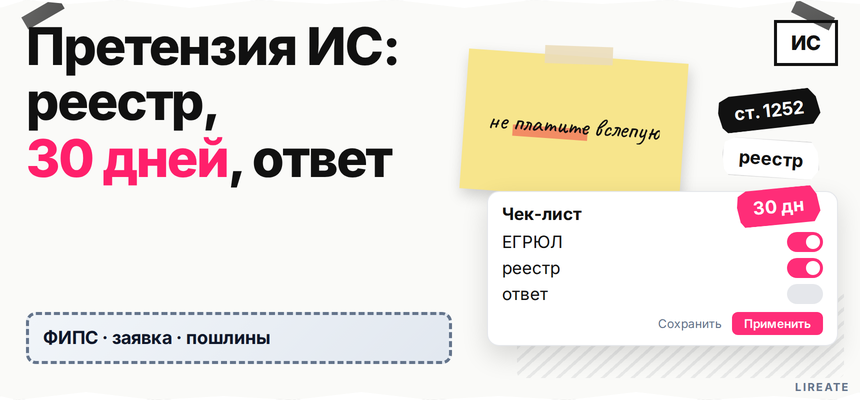
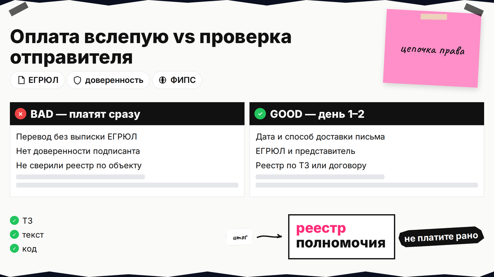
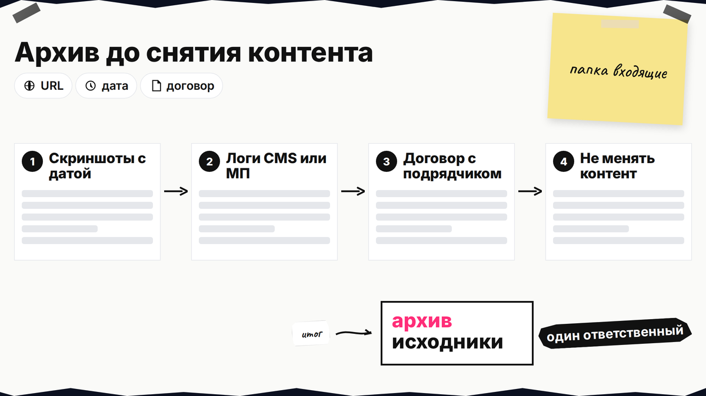
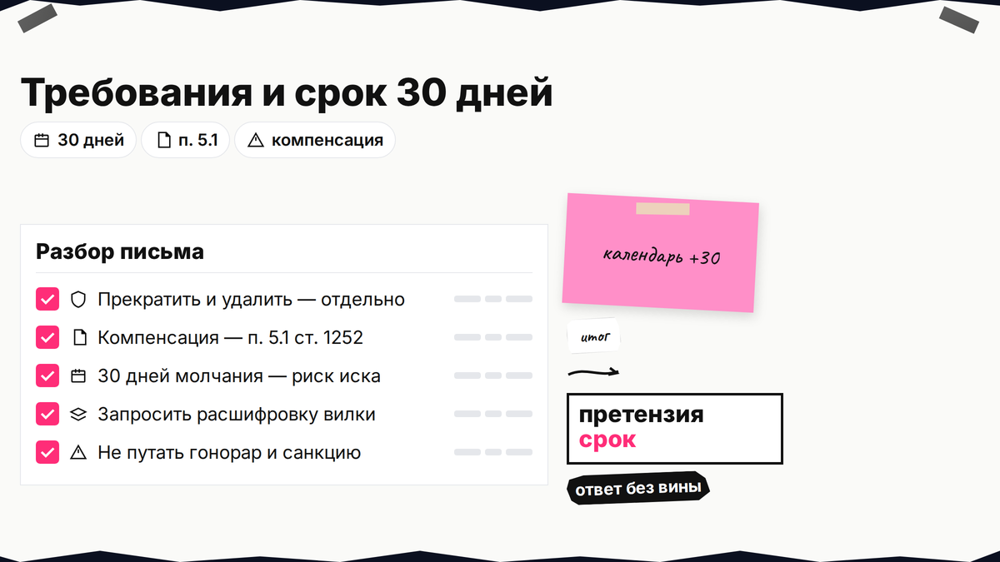

Письмо от правообладателя: снять контент, заплатить компенсацию, приложен расчёт на миллионы. Панический перевод или формулировка "согласны с требованиями" часто закрепляют позицию против вас, а молчание дольше 30 дней с даты отправки претензии даёт право идти в суд за компенсацией между юрлицами и ИП. Если вы получили претензию от правообладателя, что делать в первую очередь - не платить вслепую, а пройти чек-лист: кто пишет, на какое право ссылается, что именно спорно, и какие доказательства сохранить до ответа. Ниже - пять шагов для любого объекта ИС: товарный знак, фото, текст, программа, патент.

TL;DR / Быстрый инсайт: Досудебная претензия - это требование до суда: прекратить использование, удалить материал, иногда выплатить компенсацию вместо убытков. Исключительное право - право запрещать чужое использование; отсутствие вашего запрета не считается согласием (п. 1-2 ст. 1229 ГК РФ). Между предпринимателями компенсацию в арбитраже обычно ищут только после претензии и 30 дней молчания или отказа (п. 5.1 ст. 1252). Сначала проверьте отправителя и документ о праве, заархивируйте сайт и карточки, разберите требования, подготовьте ответ с оговоркой "не признание вины". Спор только по товарному знаку - отдельный гайд L02.
Материал на 19.11.2026 для ИП, ООО, селлеров и редакций. Это не индивидуальная юридическая консультация. В бизнесе ответственность за нарушение ИС наступает независимо от вины, если спор касается предпринимательской деятельности (п. 3 ст. 1250 ГК РФ).

Интеллектуальные права - это, простыми словами, право автора или правообладателя решать, кто может копировать бренд, текст, фото, код или изобретение. Претензию присылают, когда считают, что вы нарушили это право.
День 1-2. Зафиксируйте дату и способ получения: заказное письмо, ЭДО, email. Сверьте отправителя с выпиской ЕГРЮЛ/ЕГРИП: совпадают ли реквизиты, не ликвидировано ли лицо. Если подписывает представитель - запросите доверенность (срок, объём полномочий, полномочие на претензии).
Определите вид объекта в письме и где проверить право:
| Объект в претензии | Где проверить | Норма компенсации (ориентир) | Куда углубиться |
|---|---|---|---|
| Товарный знак | Поисковая платформа, реестры ФИПС | п. 4 ст. 1515 (10 тыс. - 10 млн с 04.01.2026) | ответ по ТЗ, чек-лист реестров |
| Фото, текст, иллюстрация | Договор отчуждения/лицензии, депозит, метаданные | п. 1 ст. 1301 | вознаграждение vs компенсация |
| Программа для ЭВМ, база данных | Реестр программ/БД на fips.ru | ст. 1301 / 1324 | договор с разработчиком, лицензия |
| Патент | Реестр патентов ФИПС | ст. 1406 и др. | сравнение с вашей технологией |
Попросите копии: свидетельство или выписку из реестра, договор отчуждения или лицензии цепочкой до подписанта, если право передавалось. Для ТЗ на маркетплейсе полезно сверить схему фиксации с материалом про нарушение ТЗ на МП.
Делайте: вести хронологию в одной папке. Не делайте: переводить деньги на реквизиты до проверки цепочки права и срока охраны знака или произведения.

Удаление поста или товара не уничтожает доказательства для суда, но до снятия соберите пакет: оригинал претензии, скриншоты страниц и карточек с видимой датой, PDF или архив страницы, исходники своего контента, договоры с дизайнером/поставщиком, лицензии Creative Commons, накладные (для спора об исчерпании прав на ТЗ - ст. 1487).
Делайте: назначить одного сотрудника на переписку. Не делайте: пересылать претензию в публичный чат без пометок "конфиденциально".

Разбейте письмо на блоки: прекратить использование, удалить, опубликовать опровержение, выплатить сумму. По ст. 1252 ГК РФ обязательная претензия перед иском в арбитраже - для компенсации и убытков при нарушении исключительного права (п. 5.1). Требования о признании права, пресечении, изъятии носителя, публикации решения суда претензией не связаны так же жёстко (подп. 1, 2, 4, 5 п. 1 ст. 1252).
Если правообладатель молчит 30 календарных дней после вашего ответа - это отдельная история; если вы молчите 30 дней после их претензии о компенсации, истец может идти в суд (п. 5.1; для арбитража также п. 5 ст. 4 АПК РФ). В письме заявителя срок "7 дней" законом для всех не зафиксирован, но затягивать опасно.
Проверьте расчёт: правообладатель выбирает один способ из закона (твёрдая вилка, 2× контрафакт, 2× стоимость права). С 04.01.2026 потолок по произведению и ТЗ - 10 000 000 руб. Попросите расшифровку: какой способ, количество, цена, период.
Делайте: пометить в календаре контрольную дату "+30 дней" от даты направления вам претензии. Не делайте: путать гонорар автору по договору с санкцией компенсации - см. авторское вознаграждение.
Маршрут ответа: реквизиты → ссылка на претензию → позиция по пунктам → запрос недостающих документов → оговорка о непризнании вины → контррасчёт компенсации (если есть цифра) → подпись → заказное/ЭДО + копия на email из письма
Спор только по ТЗ - в гайде L02. Для изображений сверьте ст. 1274 и ст. 1276.
Делайте: отвечать письменно до риска иска о компенсации. Не делайте: формулировки "признаём незаконное использование" без согласования с юристом.
После чек-листа можно снять спорный блок, оформить лицензию или договориться о сумме. Удаление не отменяет требования за прошлое. К поверенному - при крупной компенсации, нескольких объектах или уже полученном иске.
Делайте: фиксировать договорённости письменно, вести переговоры по каналу из претензии. Не делайте: подписывать соглашение с признанием вины без расчёта.
Если остаются сомнения, Передать претензию или иск на анализ можно через контакты Лирейт; актуальные форматы смотрите в услугах и в рубрике Бизнес.
Материал проверен: редакция Лирейт, практика досудебной работы по интеллектуальной собственности.
Достоверность данных: ст. 1229, 1250, 1252, 1301, 1515 ГК РФ, ст. 4 АПК РФ сверены с КонсультантПлюс на 19.11.2026. Точные объёмы спроса в Яндекс Вордстат в research не запрашивались (MCP недоступен).
Нет обязанности платить до согласия, мирового соглашения или судебного акта. Перевод без разбора может трактоваться как признание. Сначала проверьте право и расчёт, затем решайте о переговорах.
Доверенность подписанта, выписку из реестра или свидетельство, договоры отчуждения/лицензии по цепочке, описание нарушения с URL, расчёт компенсации по выбранному способу, протокол фиксации (если ссылаются).
URL, скриншоты с датой, архив страницы, карточку МП с артикулом, исходники контента, переписку с подрядчиком, договоры и лицензии. Удаление не заменяет этот пакет.
Штрафа за молчание нет, но по компенсации между юрлицами и ИП 30 дней без ответа или с отказом дают право на иск (п. 5.1 ст. 1252). Ответ фиксирует позицию и запрос документов.
Компенсация в арбитраже обычно связана с досудебной претензией (п. 5.1). Требование прекратить нарушение или изъять носитель может идти по другим основаниям п. 1 ст. 1252. Разбирайте блоки отдельно.
Email удобен как копия, но для важных позиций лучше дублировать заказным письмом или ЭДО, если в претензии указан официальный канал. Сохраните доказательство отправки.
Да: те же шаги по полномочиям, объекту, лицензии и фиксации использования плюс нюансы ниши.